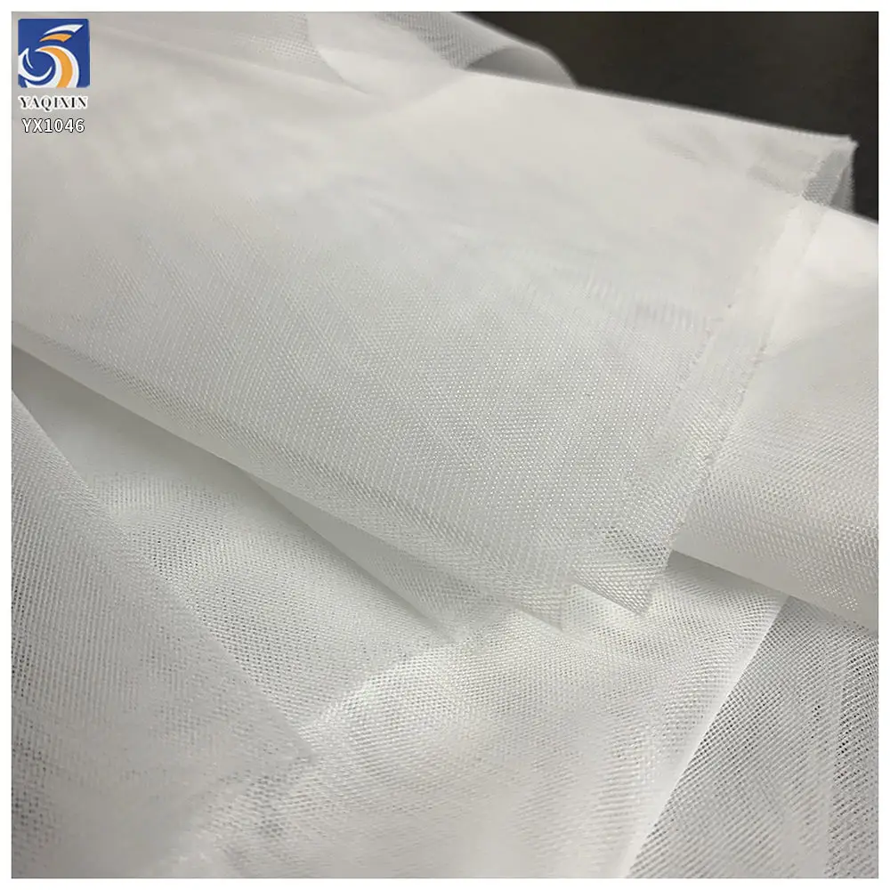
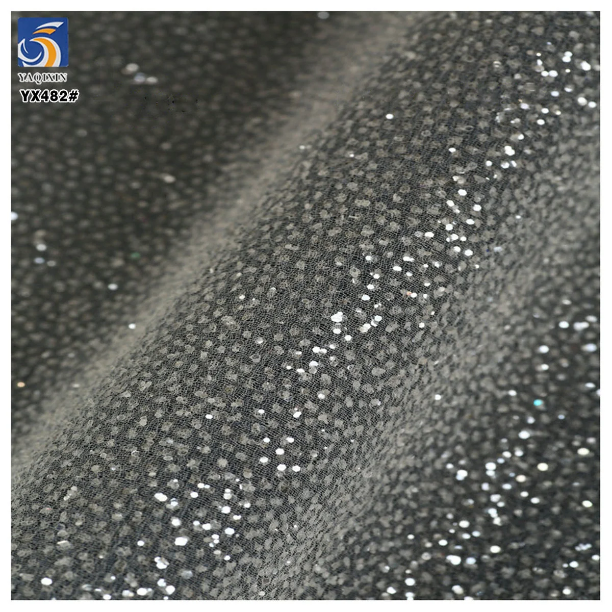
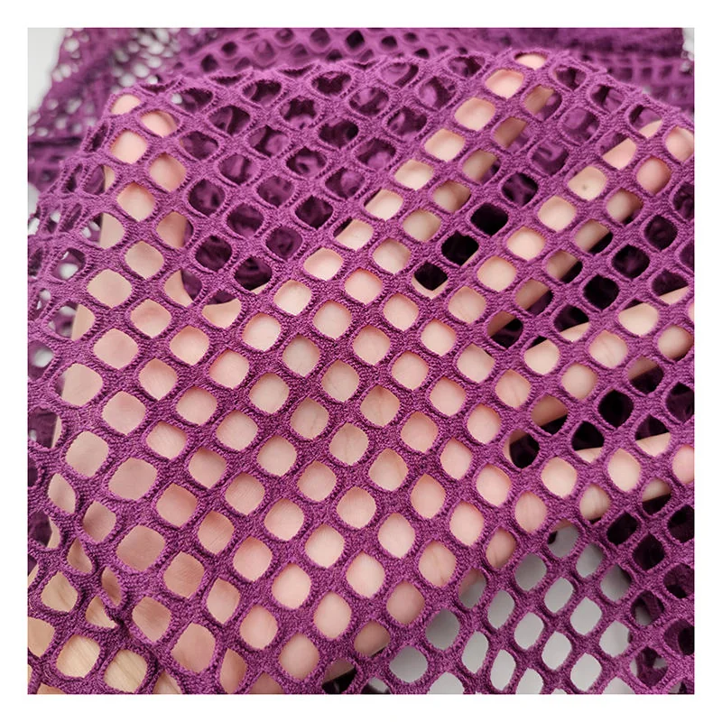

Tulle is often described as one material, but a bridal buyer, a veil maker and a dancewear developer can need very different outcomes from it. Before comparing colors or asking for a price, decide what the fabric must do in the finished garment: create soft volume, hold a visible sparkle, carry an appliqué-like surface, or move and recover with the body.
A useful sourcing brief states the garment application, base color, required transparency, target width, expected order quantity and whether the fabric will be layered, gathered, embroidered, printed or stretched. That lets a supplier send a comparable sample route instead of a random tulle selection.
Start with garment function
For a wedding dress, tulle may be used as an outer overlay, a gathered skirt layer, a sleeve, a lining-facing layer or a decorative panel. These uses place different demands on hand feel, visibility of the mesh, weight and how the fabric behaves once it is cut and sewn. For a veil, the buyer normally needs a light material that gives the intended degree of transparency without competing with the dress. For dancewear, movement, recovery and comfort against the body can matter more than a very soft bridal drape.
Write down the answer to four questions before requesting samples: Will the tulle be next to skin? Does it need to stand away from the garment or fall softly? Is the surface meant to be plain or decorative? Will the garment be stretched repeatedly in use? Those answers narrow the construction faster than a broad request for "wedding tulle".
Choose a base for softness and volume
Plain tulle is the starting point when the design needs a clean base layer, a soft veil effect or controlled volume without a decorative surface. It is especially useful when the dress design already has lace, beading or other details and the net should stay visually quiet.

For example, YX1046 soft white plain tulle is listed as 100% nylon, 20gsm and 160cm wide. Its product route is intended for bridal layers, veils, skirts and dancewear, with a 500-yard MOQ. Those figures are useful reference points, but they are not a universal specification: a buyer should still compare the sample over the intended lining, under the actual lighting and at the planned number of layers.
When the brief calls for a veil, request a drape check and look at the edge treatment after cutting. When the brief calls for a skirt layer, pin or gather the sample to see whether the volume and softness match the pattern. The same tulle can look very different when it is flat on a table versus layered in a finished silhouette.
Use surface detail with a purpose
Decorative tulle should support the garment concept instead of making every layer compete for attention. Glitter can add light-catching effect to a veil, evening dress or outer layer. Embroidered or 3D constructions can become the focal material for skirts, sleeves and decorative panels. In both cases, ask where the embellished surface will sit, how it will be cut and whether it will be combined with other trims.

YX482 sparkle dust glitter mesh is listed as 100% polyester, 30gsm and 155cm wide, with a 500-yard MOQ. It is a useful route to sample when the brief asks for a fine sparkle effect without changing the basic mesh construction. A sample should be checked after handling and folding, because the final decision should reflect the garment's intended use and finishing process.

For a more dimensional route, YX807 3D rose embroidered tulle mesh is listed as 100% polyester, 130gsm and 140cm wide for dresses, skirts and decorative garment panels. Its 5-yard MOQ makes it suitable for an early material review, while bulk terms should be confirmed once the color and construction are approved.
Build for movement and recovery
Dancewear briefs should not be treated as a bridal brief with a different color. A dancer's movement puts repeated extension, recovery and seam stress into the fabric. If the tulle will be used in fitted panels or high-movement areas, include stretch direction, recovery expectation and lining combination in the sample request.

YDM008 stretch knit fishnet mesh is listed as 95% polyester and 5% spandex, 110gsm and 170cm wide. It is positioned for swimwear, underwear, dresses and layered garments; it can be a useful comparison sample when a dancewear project needs a more stretch-led mesh route. Test it in the intended pattern shape rather than judging only from a flat swatch.
Sample the specification, not only the look
A product image can show color, drape or surface detail, but it cannot confirm the exact feel of the fabric in your construction. Use the physical sample to verify the items below, then put the approved details into the purchase order or pre-production confirmation.
- Composition, construction and weight, including any tolerance you need confirmed.
- Usable width after selvage and whether the width suits your marker or panel layout.
- Transparency, mesh visibility and color when placed over the selected lining.
- Drape, gathering response, edge behavior and seam handling for the intended garment.
- For decorative styles, surface appearance after handling, folding and the proposed garment process.
- For stretch styles, stretch direction and recovery in the actual cut direction.
- MOQ, color availability, sampling timing, packing requirements and delivery destination.
Map the brief to a product route
The following table uses current YAQIXIN catalog items as examples. It is a sourcing shortcut, not a substitute for a sample approval. The best route depends on the full garment brief and the target market.
| When the brief needs | Catalog example | Listed construction | What to confirm next |
|---|---|---|---|
| Light veil or soft plain layer | YX1046 plain tulle | 100% nylon, 20gsm, 160cm | Transparency, softness and layer count |
| Fine sparkle for veil or eveningwear | YX482 glitter mesh | 100% polyester, 30gsm, 155cm | Surface appearance after handling and lighting |
| Raised decorative focal surface | YX807 3D rose tulle | 100% polyester, 130gsm, 140cm | Placement, seams and garment weight |
| Open mesh with stretch-led use | YDM008 stretch mesh | 95% polyester / 5% spandex, 110gsm, 170cm | Stretch direction, recovery and lining |
For a faster quotation, send the garment sketch or reference image, desired tulle route, color, width requirement, expected quantity, target delivery date and destination country. If you are still comparing routes, start with a small sample set: one plain base, one decorative option and one stretch option where movement is part of the design.
Buyer questions
Which tulle is best for a wedding veil?
Start with a light plain tulle sample and judge it over the intended dress or lining. The correct choice depends on the desired transparency, softness, width, edge treatment and number of layers rather than the name alone.
Can glitter tulle be used for a veil?
Yes, when the design calls for a visible sparkle effect. Request a sample and inspect it in the intended lighting, after handling and with the planned trim or lace, so the surface effect is evaluated as part of the full design.
What should a dancewear buyer ask for?
State where the mesh will be used, the required stretch direction, recovery expectation, lining and movement level. A stretch mesh sample should be tested in the actual pattern direction before bulk approval.
What information is needed for a wholesale tulle quote?
Share the application, product route or reference image, composition preference, color, width, quantity, destination and required delivery date. If the garment is custom, include the sample and approval requirements as well.
Ready to discuss a fabric brief?
Share your intended application, a reference image or swatch, quantity, and market. We can help you compare a stock or custom fabric route before you place a bulk order.
Start a fabric inquiry